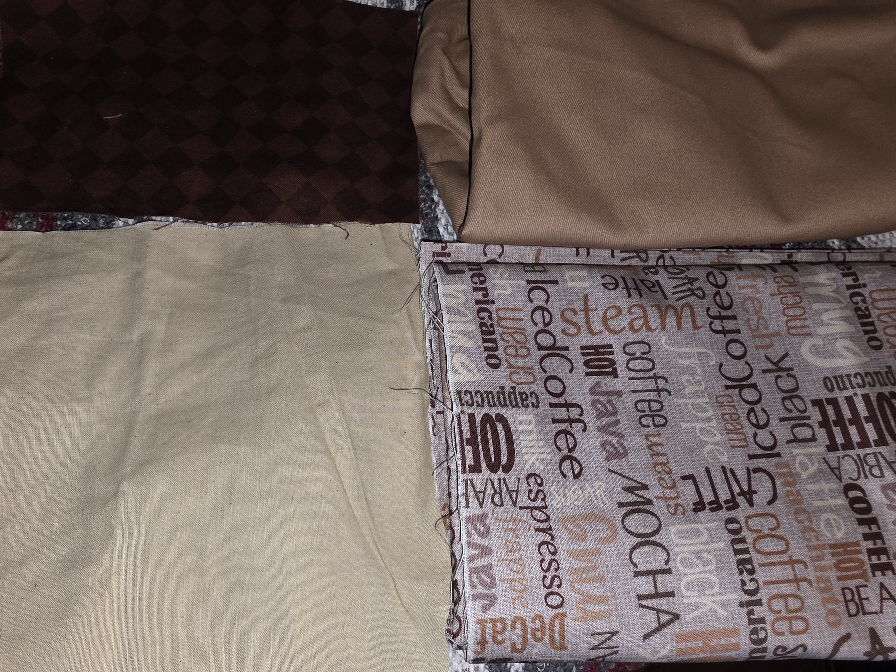

My house has central air, so it's always relatively cool in my bedroom. Usually, a sheet isn't quite enough weight or warmth, but a blanket is too much, especially in the summer.
For my inaugural return to sewing, I'm trying to make what I might call a "sheet quilt." It's a quilted top with several layers of Egyptian cotton as the backing and filler. Just thick and heavy enough to be satisfying, but not generally as hot as my mexican blanket.
Keep checking back if you're interested, as I'll be updating this in real time.
I'm starting with these pieces:
